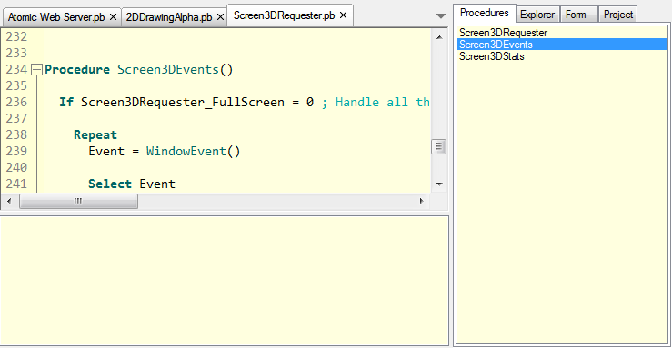

Getting Started
The PureBasic IDE allows you to create and edit your PureBasic source codes, as well as run them, debug them and create the final executable. It has both an interface to the PureBasic Compiler, as well to the PureBasic Debugger.Other then that, there is the main menu and the toolbar. The toolbar simply provides shortcuts to menu features. It can be fully customized. To find out what each button does, move your mouse over it and wait until a small tool-tip appears. It shows the corresponding menu command. The menu commands are explained in the other sections.
The code editing area (below the toolbar)
Here all the source codes are displayed. You can switch between them with the tabs located right above it.
The tools panel (on the right side by default)
Here you have several tools to make coding easier and increase productivity. The tools displayed here can be configured, and it can even be completely removed. See Customizing the IDE for more information.
The error log (located below the editing area)
In this area, the compiler errors and debugger messages are logged. It can be hidden/shown for each source code separately.